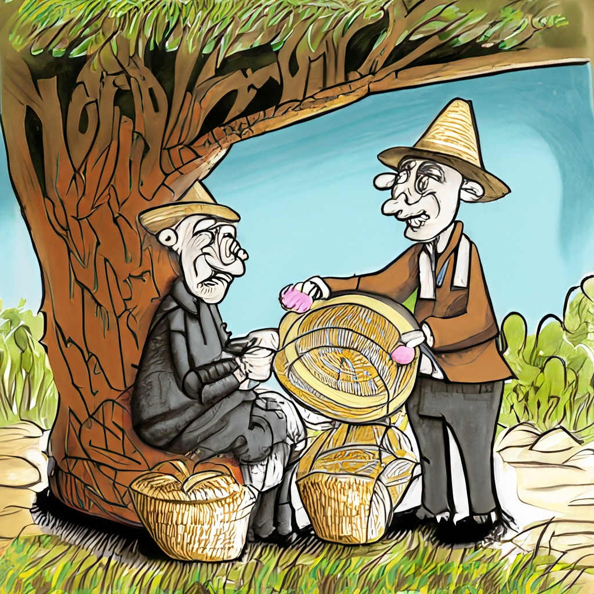

短篇小故事《老人與商人》
時間:2023-01-08 作者:未知
部落中有一位老人，他正悠閒地坐在一棵大樹下面，一邊乘涼，一邊編織著草帽，編完的草帽他會放在身前一字排開，供遊客們挑選，路過的遊客們 紛紛駐足。

一位精明的商人看到了老人編織的草帽，立刻盤算開來，他想：這樣精美的草帽如果運到美國去，至少能夠獲得十倍的利潤。 於是他問老人：「朋友，這種草帽多少錢一頂。」「十塊錢一頂。」老人微笑著回答，繼續編織著草帽，他那種閒適的神態，真的讓人感覺他不是在 工作，而是在享受一種美妙的心情。
於是商人對老人說：“我想在你這裡訂做1萬頂草帽，你每頂草帽能給我多少優惠？”
他本來以為老人一定會高興萬分，可沒想到老人卻皺著眉頭說：“這樣的話啊，那就要20元一頂了。”
「為什麼？」商人對著老人大叫。 老人講出了他的道理：「在這棵大樹下沒有負擔地編織草帽，對我來說是種享受，可如果要我編1萬頂一模一樣的草帽，我就不得不夜以繼日地工作，不僅 疲憊勞累，還成了精神負擔。難道你不該多付我些錢嗎？”
啟示：如老人所言，當工作不能成為一種享受而成為一種循環往復的單調，確實會令人感到乏味，然而我們還是不得不為了特定的利益而奔走勞累。 但「你為了什麼而工作」卻是需要你我仔細思考的問題。 只有真正熱愛工作的人，才是工作中真正幸福的人。